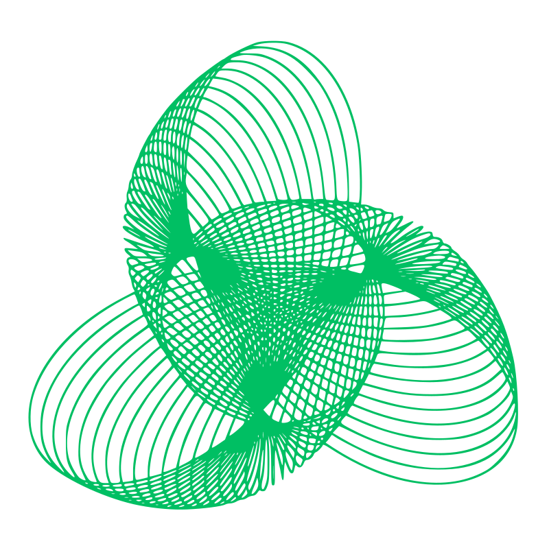

EU
Horizon Europe consortium proposal
Pitched a hybrid quantum optimisation project as part of an EU consortium, with D-Wave involved.

A simulation gate decides which jobs deserve real quantum hardware, so agents can use the most expensive compute on Earth without wasting a second of it.
Degrees, capital, a team. For most people, a thought stayed a thought.
You don't need to be a scholar any more. You need an idea, and agents write, test and ship it.
Shells, browsers, sandboxes: today's agents have a workstation. The next machine they will reach for is a quantum computer, for the problems classical machines can't crack.
IBM's pay-as-you-go list price for QPU time, billed per second. Every second of quantum hardware is metered.
Agents iterate freely on CPUs. Pointed straight at a QPU, that same loop burns budget on jobs that were never going to work.
In our own benchmarks, quantum methods won at one problem size and lost at another. Someone has to decide, job by job, whether quantum is worth it.
Every quantum job an agent proposes is run first on a simulated layer and benchmarked against the best classical answer.
Only jobs that score in the 95th percentile or above qualify for real quantum hardware. Everything else gets the classical answer, and costs nothing on the QPU.
“The agent may propose. The gate decides what reaches the hardware.”
The agent states a goal. The QuantumClaw planner breaks it into concrete decisions.
Decisions go into a backend-neutral IR, then compile to QUBO / BQM form. Gate-model circuits come next.
Run on CPU emulators of quantum annealing and on classical solvers in parallel, at near-zero cost.
Benchmark against a classical shadow plan. Score ≥ 95th percentile means the job is qualified.
Qualified jobs run on real QPUs (D-Wave today, via our Ocean sidecar). Results return to the agent.
Every run is scored and stored as a reusable skill, so the gate gets sharper with every job it sees.
At 8 stops, the quantum-annealing emulator beat the classical heuristic (441.5 vs 490.8).
At 10 stops it lost (≥ 520.7 vs 500.9). A fixed “always quantum” rule would have been wrong.
Measure first, then spend. The gate picks the winner per job, before any QPU second is billed.
Rust agent runtime with hybrid classical + quantum-inspired planning, a policy gate, and pluggable solvers up to a real D-Wave QPU.
Python sidecar that connects the runtime to D-Wave Ocean: simulated annealing, annealing emulator, Leap hybrid and QPU.
p-bit Ising machine in synthesizable SystemVerilog, plus a digital twin. 95% success on 8-spin Max-Cut in simulation.
Deterministic instruction cache and prefetch engine for quantum pulse instructions.
Matchgate simulator for a measurement-induced quantum neural network, with proofs in Lean 4.
AI hallucination detector with formally verified trust scoring: the same “score before you trust” idea as the gate.
Pitched a hybrid quantum optimisation project as part of an EU consortium, with D-Wave involved.
EOI for Q-Port Optimizer: berths, cranes, yard slots and truck routes co-optimised as one QUBO on a hybrid quantum pipeline.
Where the gate idea came from: every quantum plan we proposed needed a classical fallback. The gate makes that choice automatically.
Multi-country marketing mix modelling platform across Brazil, Korea, Colombia, Argentina and the USA.
Technical capability partner on next-gen military avionics: C++ proof of concept in an EU programme of 26 entities.
Quantum-inspired products for routing, ad attribution, port logistics and consent.
“I'd introduce myself as just a human, and my home is planet Earth.”
Founder & CEO · Yabloko Labs
Years engineering
C++ speed-up delivered
Public repos
Logistics, ports, ad spend, finance. Pay per gated job plus a subscription, and only pay QPU prices when the QPU actually wins.
The gate sends providers qualified workloads with real results, so their customers come back. We take a revenue share on routed QPU spend.
A drop-in tool (MCP / skill) gives any agent safe access to quantum hardware, with budget limits and audit built in.
Revenue earned by quantum computing companies in 2025, projected to reach up to $4.4B by 2028.
Economic value quantum could create for companies worldwide by 2035.
Source: McKinsey Quantum Technology Monitor 2026.
QuantumClaw 0.3 on crates.io. Classical, emulator and D-Wave backends behind one interface.
Scoring against classical shadow plans, the 95th-percentile qualifier, and a cost report for every job.
Annealing plus gate-model providers. MCP tool for any agent. First 3 design partners in logistics.
The standard routing layer between AI agents and quantum clouds.
Any agent reaches a quantum computer as easily as it reaches a GPU today.